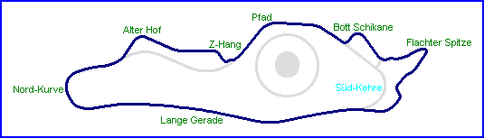

| Length | 1.795 Miles // 2.888 km |
| Direction | |
Contact Information |
|
| Address |
Forschungs und Entwicklungsmitte Porschestrafle 71287 Weissach |
| Telephone | +49 (0)711 911-0 |
| Website | http://www.porsche.com |
Weissach
Porsche Research & Development Centre - Bergkurs
|  | |
| Bergkurs | CAN-AM Kurs |
| Length | 1.795 Miles // 2.888 km |
| Direction | |
Contact Information |
|
| Address |
Forschungs und Entwicklungsmitte Porschestrafle 71287 Weissach |
| Telephone | +49 (0)711 911-0 |
| Website | http://www.porsche.com |
Lasted Updated: 03 January 2003 19:10:16 GMT Standard Time